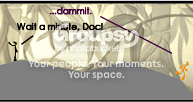

A different idea that, while not entirely possible, sounds more workable than move-through tiles.
If a graphic (a PNG or JPG) were displayed behind the map, it could give the desired effect.
Here is a clip from blue_tetris's webcomic, The Real N (I've edited it to make it look more like the game)

Ignoring the text and such, this is the best example that I know of what I am talking about.
The problem is that placing a graphic behind the map adds filesize and complexity to the map file. N works as well as it works
because the maps are simple data describing each tile. Adding a background graphic would not make it so simple; in addition to the level data, the user would have to place the graphic file in the appropriate directory for it to appear in the level.
While this is possible and would be quite nice, it would reduce the simplicity of the levels. I have known of other simply-designed games that require the user to do something to add flavor to the levels.